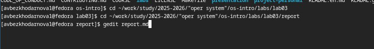
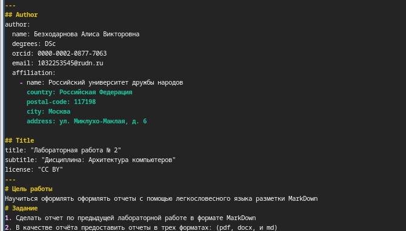
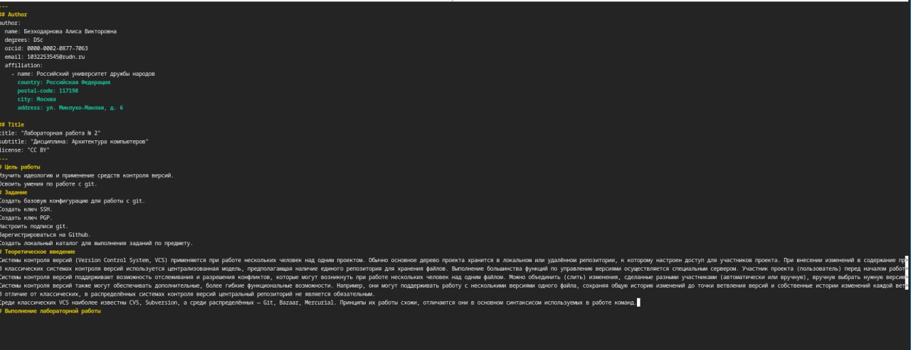
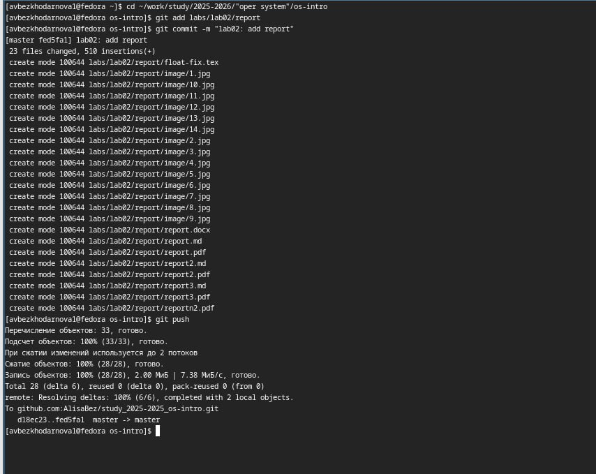

Лабораторная работа №2
Архитектура компьютеров
Безходарнова А.В.
Российский университет дружбы народов, Москва, Россия
06 марта 2026
Информация
Докладчик
- Безходарнова Алиса Викторовна
- Студентка НКАбд-01-25
- Алiса
- Российский университет дружбы народов
- 1032253545@rudn.ru

Цель работы
Научиться оформлять отчёты с помощью легковесного языка разметки Markdown.
Задание
Сделать отчёт по предыдущей лабораторной работе в формате Markdown. В качестве отчёта предоставить отчёты в 3 форматах: pdf, docx и md
Актуальность темы.
Язык разметки Markdown широко используется в современной научной и технической среде для создания структурированных текстов, документации и отчётов благодаря своей простоте и удобству преобразования в различные форматы.
Объект и предмет исследования.
Объектом исследования является язык разметки Markdown, а предметом — его синтаксис и возможности применения для оформления отчётов по лабораторным работам.
Научная новизна.
Новизна работы заключается в систематизации базовых конструкций Markdown и их адаптации для подготовки отчётов в рамках учебного процесса.
Практическая значимость работы.
Практическая значимость работы состоит в формировании навыков оформления отчётов в формате Markdown с последующей компиляцией в PDF и DOCX, что необходимо для выполнения лабораторных работ и дальнейшей учебной деятельности.
Теоретическое введение
Чтобы создать заголовок, используйте знак ( # ). Чтобы задать для текста полужирное начертание, заключите его в двойные звездочки. Чтобы задать для текста курсивное начертание, заключите его в одинарные звездочки. Чтобы задать для текста полужирное и курсивное начертание, заключите его в тройные звездочки. Блоки цитирования создаются с помощью символа >. Неупорядоченный (маркированный) список можно отформатировать с помощью звез- дочек или тире. Чтобы вложить один список в другой, добавьте отступ для элементов дочернего списка. Упорядоченный список можно отформатировать с помощью соответствующих цифр. Чтобы вложить один список в другой, добавьте отступ для элементов дочернего списка. Синтаксис Markdown для встроенной ссылки состоит из части [link text] , представ- ляющей текст гиперссылки, и части (file-name.md) – URLадреса или имени файла, на который дается ссылка. Markdown поддерживает как встраивание фрагментов кода в предложение, так и их размещение между предложениями в виде отдельных огражденных блоков. Огражденные блоки кода — это простой способ выделить синтаксис для фрагментов кода. Внутритекстовые формулы делаются аналогично формулам LaTeX. Для обработки файлов в формате Markdown будем использовать Pandoc. Конкретно, нам понадобится программа pandoc , pandoc-citeproc https://github.com/jgm/pandoc/releases, pandoccrossref https://github.com/lierdakil/pandoc-crossref/releases. Преобразовать файл README.md можно следующим образом: 1 pandoc README.md -o README.pdf или так 1 pandoc README.md -o README.docx Можно использовать следующий Makefile 1 FILES = $(patsubst %.md, %.docx, $(wildcard .md)) 2 FILES += $(patsubst %.md, %.pdf, $(wildcard .md))
Выполнение лабораторной работы
Перехожу в каталог и открываю текстовый редактор. (рис. @fig:001).

Создаю шапку своего отчета (рис. @fig:002).

Продолжаю создавать отчет (Рис @fig:003).

После создание отчета конвертирую фалйы в форматы docx и pdf, а после подгружаю их (Рис @fig:004)

Вывод
В ходе данной лабораторной работы я научилась оформлять отчеты с помощью языка разметки Markdown.